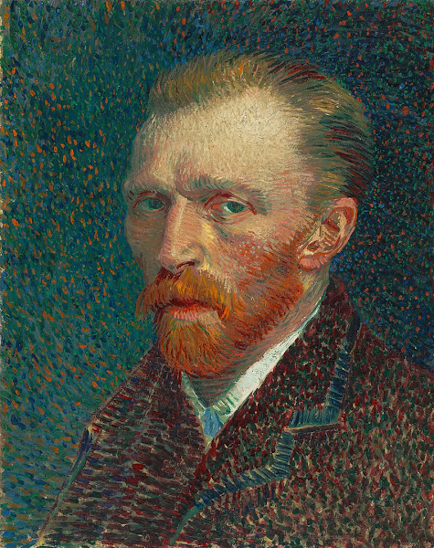

Vincent Willem van Gogh fue un pintor neerlandés, uno de los principales exponentes del postimpresionismo. Pintó unos 800 cuadros y realizó más de 1600 dibujos. Una figura central en su vida fue su hermano menor Theo, marchante de arte en París, quien le prestó apoyo financiero de manera continua y desinteresada.
Nacimiento: 30 de marzo de 1853, Zundert, Países Bajos
Fallecimiento: 29 de julio de 1890, Auvers-sur-Oise, FranciaObras de Arte de Vicent Van Goght